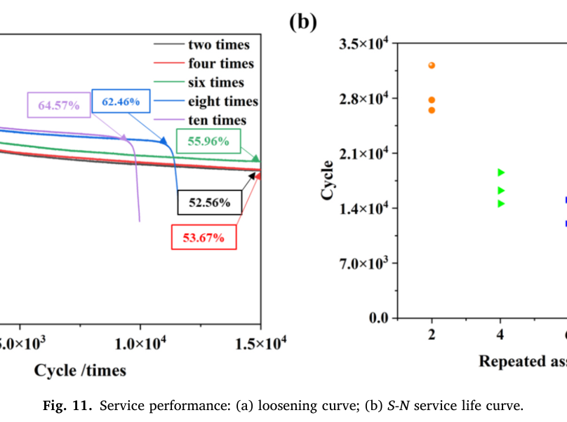

Sun 2025 Reassy — estudo de caso— case study
Figura do artigoPaper figure

Figura(s) originais do artigo (recorte do PDF) — a fonte dos pontos que foram digitalizados.Original figure(s) from the paper (PDF crop) — the source of the digitized points.
Condições do ensaioTest conditions
| ReferênciaReference | Sun et al. (2025). Eng. Fail. Anal. 182:110030 · doi:10.1016/j.engfailanal.2025.110030 |
| ParafusoBolt | M8x1.25 |
| Pré-carga F0Preload F0 | 15 kN |
| AmplitudeAmplitude | ±0.30 mm |
| FrequênciaFrequency | 12.5 Hz |
| Família / nº de curvasFamily / curves | transverse · 5 |
| MAE medianomedian | 0.018 |
Informações do artigo — aparato, corpo-de-prova, matriz de ensaiosPaper information — apparatus, specimen, test matrix
Sun et al. 2025 (Eng. Fail. Anal.) — Influence of repeated assembly of the crimping self-locking nut on connection performance
Citation + DOI
Jianfei Sun, Chao Liu, Yanwei Xu, He Wang, Jianhua Liu, Jinfang Peng, Minhao Zhu, "The influence of the repeated assembly of the crimping self-locking nut on the performance of the connection structure," *Engineering Failure Analysis* 182 (2025) 110030. DOI: 10.1016/j.engfailanal.2025.110030. Received 10 Jul 2025; accepted 17 Aug 2025. Southwest Jiaotong University (SWJTU) + AECC Sichuan Gas Turbine Establishment + Aerospace Precision Products Co. — same SWJTU tribology/bolted-joint group lineage as the in-library Liu2016/Liu2017/Liu2019 axial papers (J. Liu + J. Peng are co-authors here too), but this paper is about a specific aerospace locking device (crimped nut) and reassembly history, not axial vibration amplitude.
Gap tag(s) + why
- **G5 (primary) — re-tightening / embedding renewal, successive assembly
histories. Fig. 11(a) is a genuine multi-generation-reassembly dataset: five full preload-retention-vs-vibration-cycle curves, each for a specimen that was assembled and disassembled 2, 4, 6, 8, or 10 times** before the vibration test began. This is a strict superset of the single-retighten analogs already in the library (Z.Liu2022, Liu2016wear Fig. 3) — it is the first in-library source that sweeps the *reassembly count itself* as an independent variable and shows the resulting family of decay curves, directly useful for calibrating initial_embedding_frac / retighten() / k_emb_renew as a function of assembly history rather than a single before/after pair.
- G7 (secondary) — locking device. The "crimping self-locking nut" is a
distinct prevailing-torque device (radial crimp interference r on part of the nut's thread crown, silver-plated GH738) not yet represented in the library's locking-device set (which so far leans nylon-insert/swage/Spiralock per this paper's own lit. review). Figs. 9-10 give a direct, quantified locking (prevailing) torque and back-derived friction coefficient trend over 10 reassemblies, for both the crimping self-locking nut and an ordinary (non-locking) nut reference.
- Noteworthy tension with the current model's damage→friction sign: here,
repeated assembly generates silver-oxide (Ag₂O) debris that raises interfacial friction and helps maintain preload (better anti-loosening), while simultaneously initiating microcracks that reduce fatigue life — i.e. surface degradation and friction move in the SAME direction (both up) as "damage" accumulates, unlike BAS V2's current surface_damage convention (mu_bearing_eff = mu·(1−k_dmg_mu·D), damage always *lowers* friction). This paper is a clean, explicit counter-example showing the sign of the damage-friction coupling is mechanism- and material-pairing-dependent (oxide debris impeding slip vs. galling/adhesive smoothing) — worth keeping in mind for any generalization of k_dmg_mu beyond the âncora interna steel-on-steel rig it was calibrated on. Not itself a form to build, just a sign-convention caveat.
Rig / apparatus
- Two distinct experimental protocols in this paper, both run on the same
family of specimens but NOT the same test: 1. Repeated static assembly/disassembly sequence (Section 3.2.1, Figs. 9-10): the nut (crimping self-locking or ordinary reference) is installed onto the bolt with its "connected components" (clamped members — thickness/material not stated), then removed and reinstalled, up to 10 times. At each assembly, the locking (prevailing) torque is recorded and a friction coefficient is back-derived (method not explicitly stated in the paper — presumably a torque-preload / DIN 946-type back-calculation from the measured torque and either the target or an independently measured preload; not confirmed). 2. Transverse vibration test (Section 2.3, "Test Parameters"; Figs. 11a/b): a SEPARATE specimen set, each pre-conditioned by exactly 2, 4, 6, 8, or 10 prior assemblies, is then subjected to constant-amplitude transverse vibration until either 15,000 cycles or fracture, whichever comes first. This produces the preload-retention (Fig. 11a) and fatigue-life (Fig. 11b, S-N-style) curves.
- Control mode (vibration test): stated as displacement-controlled
transverse loading — "Amplitude of cyclic transverse displacement: 0.30 mm" with "Displacement amplitude value load path: Ad = AF·sin(2πft)" (the paper's own symbol conflates Ad/AF, read as displacement amplitude 0.30 mm, load ratio −1, i.e. Junker-type ± transverse displacement). Maps to BAS V2 displacement-mode (step_cycle(..., delta_amp=0.30e-3), no separate F_amp).
- Bolt preload target: 15 kN (stated for the vibration test).
- Frequency: 12.5 Hz.
- Failure criterion: fracture (fatigue), stopping the vibration test
early for the higher-reassembly-count specimens (see caveats).
- Preload/torque measurement: not explicitly described (no load-cell,
strain-gauge, or ultrasonic method named in the Methods section). Ref. [26] in the bibliography ("Research on the measurement technology for pretension stress on small-sized bolts based on the piezoelectric ultrasonic resonance method") is cited in the same sentence as the friction-coefficient discussion, suggesting an ultrasonic preload method may underlie the friction-coefficient back-calculation, but this is inferred from a citation, not a stated methodology — treat as unconfirmed.
- Microscopy: OM (Olympus DSX100), SEM (JEOL JEM-6610LV), EDX/EDS, and EBSD
(after Ar-ion cross-section polishing) on sectioned nuts at 2/6/10 reassemblies — damage-mechanism evidence only, not curve data.
Specimen / materials
- Nut: MJ8 crimping self-locking nut (aerospace J-thread series, per the
abstract; no further thread-geometry table given in-text). Material GH738 (Chinese-designation Ni-Co-Cr superalloy, aka GH4738-family, comparable to Inconel-100-type "aero-engine" superalloys), silver-plated. Composition and mechanical properties as printed in the paper's Table 1/2 (verified by direct crop of page 4, not just text extraction):
- Table 1 (wt%): C 0.06, Cr 17.00, Ni 50, Co 12.00, Mo 3.80, Al 1.50, Ti 3.1,
Fe = "余" (balance/remainder marker in the original Chinese-authored table). Caveat: standard GH738/GH4738 literature composition has Ni as the balance element (~50-53%) and Fe as a minor/tramp constituent (≤2%) — the printed table's placement of the balance marker "余" under Fe (with Ni given a fixed value of 50) looks like a column/label mix-up in the source paper itself. We report the table exactly as printed; do not silently "fix" it if reusing these numbers.
- Table 2 (mechanical): E = 780 GPa, yield = 1276 MPa, tensile = 1462 MPa,
elongation = 26%, reduction of area = 31%. Grain size grade 3.5 (GB/T 6394-2017), equiaxed γ + dispersed γ' + MC carbides + minor chain-like M6C at grain boundaries, local twins.
- Note E = 780 GPa is implausibly high for any metal (likely a units/typo
in the source, probably intended ~200 GPa-class or a mis-keyed value) — flagged, not corrected, since it is copied verbatim from the paper.
- Bolt: not characterized (no material, class, or thread-geometry table
given for the mating bolt/stud itself — only the nut is detailed).
- "Connected components" (clamped members): mentioned only as a binary
condition ("with" vs. "without" connected components); thickness, material, and geometry are not given.
- Locking device: the crimping self-locking nut itself — a radial
crimp/extrusion of size r applied to part of the nut's thread crown during manufacture, creating an interference fit with the bolt thread (prevailing torque + preload retention device), distinct from nylon-insert, swage, or Spiralock types discussed in the paper's own literature review (Section 1).
- Crimp interference
r: FEM-swept at 0.05 / 0.10 / 0.15 mm (Section 3.1,
FIGS. 5-8, all FEM — not digitized here). r = 0.15 mm was selected as optimal (max thread contact pressure without excessive stress concentration) and is the ONLY crimp size carried into the experimental campaign (Figs. 9-16).
- Surface finish / roughness: not reported (no Ra/Rz values).
- Lubrication: none stated as a deliberate lubricant; the silver plating
itself is the tribological interface (soft, sacrificial coating that oxidizes to Ag₂O debris under repeated sliding/reassembly).
Test matrix
| Variable | Levels |
|---|---|
Crimp interference r (FEM only) | 0.05, 0.10, 0.15 mm — FEM parametric sweep, NOT carried to experiment except r=0.15 mm |
| Repeated assembly/disassembly count (Figs. 9-10) | 1 through 10 (integer steps), 2 nut types (crimping self-locking "Lock nut" vs ordinary "Nut") |
| Repeated assembly count pre-conditioning (Figs. 11a/b, 12-16) | 2, 4, 6, 8, 10 (5 groups); microscopy specifically at 2, 6, 10 |
| Vibration test: bolt preload | 15 kN (fixed) |
| Vibration test: transverse displacement amplitude | ±0.30 mm |
| Vibration test: frequency | 12.5 Hz |
| Vibration test: load ratio | −1 |
| Vibration test: max cycles / stop criterion | 15,000 cycles OR fracture |
| Replicates (Fig. 11b) | 2-3 specimens per reassembly-count group (14 total fatigue-life points) |
| Curves in Fig. 11(a) | 1 representative curve per reassembly-count group (5 curves) |
Experimental nuances
- FEM vs. experiment split is clean and explicit: Section 3.1 (Figs. 5-8)
is entirely ABAQUS/MATLAB parametric FEM (equivalent stress/strain clouds, thread-tooth stress/strain-vs-distance curves, clamping-force-vs-rotation-angle curves) used ONLY to select the optimal crimp size r=0.15 mm. Section 3.2 onward (Figs. 9-18) is experimental (torque/friction curves, loosening/S-N curves, OM/SEM/EDX/EBSD micrographs) on nuts crimped at that one selected size. None of Figs. 5-8 were digitized (FEM parametric, per task instructions) — see sun2025efa110030_tables12.png / _table1.png and the page-6/7/8 renders in figures/ for the full-page context if needed.
- Silver-oxide friction-rise mechanism: repeated assembly progressively
destroys the silver plating (confirmed by EDS: Ag content falls, Ni and O rise with reassembly count) via oxidative wear, forming Ag₂O debris that "impedes the sliding of the thread along the thread line direction" — the paper's own explicit causal chain for why BOTH the locking torque (Fig. 9) and friction coefficient (Fig. 10) increase with reassembly count, and why the anti-loosening performance (Fig. 11a plateau level) improves with more prior reassemblies.
- Competing mechanism: the same repeated assembly also initiates
surface microcracks (silver-plating cracking/spalling, substrate microcracks) that reduce fatigue resistance — Fig. 11b life drops monotonically with reassembly count even as Fig. 11a's retention improves. The paper's own headline trade-off: anti-loosening UP, fatigue life DOWN, with reassembly count. Their recommendation: cap reassembly at ≤6 cycles as a practical balance (abstract).
- Microscopy (Figs. 12-17) attributes the fatigue-life drop to increasing
density of low-angle grain boundaries (LAGBs, 2°-15°) in the crimped (locking-area) thread root region under repeated plastic straining — LAGBs restrict dislocation glide, reduce ductility, and promote brittle crack initiation. Qualitative/microstructural, not a curve.
- "With" vs. "without" connected components: the paper states the locking
torque trend for crimping nuts "remains stable regardless of the presence of connected components" and is "similar to the curve without connected components," implying a reference condition (bare nut on stud, no clamped plates) exists but was not plotted — only described qualitatively. Fig. 9 as digitized here is the "with connected components" condition for both nut types (per the figure's own context sentence).
- Fracture during the vibration test: the "eight times" and "ten times"
pre-conditioned specimens in Fig. 11(a) do not reach 15,000 cycles — their loosening curves terminate early (sharp near-vertical drop in the plotted "degree of looseness," representing fatigue fracture, not continued smooth loosening) at roughly N≈10,500 (eight times) and N≈9,500 (ten times), consistent with the lower end of their respective Fig. 11(b) replicate scatter (eight times ≈ 9.8k-14.8k; ten times ≈ 8.0k-9.8k cycles).
Main conclusions (paper's own, condensed)
1. Crimp size r governs the FEM mechanical response; r = 0.15 mm is optimal (best thread contact pressure) but larger r raises stress concentration and crack-initiation risk. 2. Repeated assembly improves anti-loosening (higher residual preload fraction) via silver-oxide debris raising interfacial friction, but degrades fatigue life via microcrack initiation and silver-coating destruction — a direct trade-off. Recommendation: ≤6 reassembly cycles, r = 0.15 mm, as a practical balance. 3. Progressive silver-coating loss exposes the GH738 substrate to oxidative wear (EDS: Ag↓, Ni/O↑ with reassembly count); crimped (locking) regions show higher LAGB density than non-locking regions, consistent with higher local stress/strain concentration from the crimp, and predisposing to brittle fracture.
Curve inventory
| Figure | Curve / condition | CSV filename | x-axis | y-quantity | # pts |
|---|---|---|---|---|---|
| Fig. 9 | Locking torque, crimping self-locking nut ("Lock nut"), with connected components | sun2025efa110030_fig9_locktorque_locknut.csv | assembly/tightening cycle # (1-10) | Torque (N·m) — NOT F/F0 | 10 |
| Fig. 9 | Locking torque, ordinary nut ("Nut") reference, with connected components | sun2025efa110030_fig9_locktorque_nut.csv | assembly cycle # (1-10) | Torque (N·m) | 10 |
| Fig. 10 | Friction coefficient, crimping self-locking nut ("Lock nut") | sun2025efa110030_fig10_frictioncoeff_locknut.csv | assembly cycle # (1-10) | Coefficient of friction μ (dimensionless) — NOT F/F0 | 10 |
| Fig. 10 | Friction coefficient, ordinary nut ("Nut") reference | sun2025efa110030_fig10_frictioncoeff_nut.csv | assembly cycle # (1-10) | Coefficient of friction μ (dimensionless) | 10 |
| Fig. 11(a) | Loosening curve, pre-conditioned by 2 reassemblies | sun2025efa110030_fig11a_loosening_reassy02.csv | vibration cycle # (0-15,000) | interpreted as F/F0 (see caveat) | 24 |
| Fig. 11(a) | Loosening curve, 4 reassemblies | sun2025efa110030_fig11a_loosening_reassy04.csv | vibration cycle # | F/F0 | 24 |
| Fig. 11(a) | Loosening curve, 6 reassemblies | sun2025efa110030_fig11a_loosening_reassy06.csv | vibration cycle # | F/F0 | 24 |
| Fig. 11(a) | Loosening curve, 8 reassemblies (fractures ≈N=10,500, curve trimmed there) | sun2025efa110030_fig11a_loosening_reassy08.csv | vibration cycle # (0-10,500) | F/F0 | 20 |
| Fig. 11(a) | Loosening curve, 10 reassemblies (fractures ≈N=9,500, curve trimmed there) | sun2025efa110030_fig11a_loosening_reassy10.csv | vibration cycle # (0-9,500) | F/F0 | 19 |
| Fig. 11(b) | S-N-style fatigue life vs. reassembly count (all 5 groups, replicate scatter) | sun2025efa110030_fig11b_fatiguelife_vs_reassembly.csv | reassembly count (2,4,6,8,10) | Cycles to fracture — NOT a preload curve | 14 |
Not digitized (FEM/parametric or non-curve, per task instructions): Fig. 1 (nut-type schematic), Fig. 2 (roadmap diagram), Fig. 3 (FE model images), Figs. 5-8 (FEM stress/strain/clamping-force parametric sweep vs. crimp size r — explicitly FEM), Figs. 12-17 (OM/SEM/EDS/EBSD micrographs — qualitative damage evidence only, no x-y curve), Fig. 18 (grain-boundary/misorientation maps).
V2 mapping
- **Fig. 11(a) → embedding-renewal calibration target (roadmap item 5,
retighten() / k_emb_renew / initial_embedding_frac): this is the first in-library dataset giving a genuine family of F/F0-vs-cycle curves indexed by prior-reassembly count (2/4/6/8/10), rather than a single before/after retighten pair. The monotonic trend — higher reassembly count → higher plateau F/F0 (52.6% → 53.7% → 56.0% → 62.5%(†) → 64.6%(†), where (†) = pre-fracture value, not a stabilized plateau) — is qualitatively the OPPOSITE of what a naive "embedding is used up, nothing left to renew" model would predict (which would suggest reassembly should progressively worsen, not improve, retention). The improvement here is friction-driven (oxide debris), not embedding-driven — i.e. this dataset is a good target for a friction-vs-reassembly-count coupling** (per Fig. 10's own μ trend, usable as a direct input/driver) layered on top of whatever embedding-renewal state is carried by retighten(), rather than a pure embedding-depth-vs-reassembly fit. Suggest calibrating with Fig. 10's μ(reassembly) as an exogenous friction-schedule input and letting Fig. 11(a)'s F/F0 plateaus be the fit target/falsifier for the embedding+friction combination.
- Fig. 10 → per-reassembly friction-coefficient schedule: μ rises
0.130→0.200 (ordinary nut) and 0.146→0.279 (crimping self-locking nut) over 10 reassemblies — a directly usable, physically-derived (not fitted) μ vs. reassembly-count table, analogous to how Liu2016wear's dry-vs-MoS2 μ pair is used, but here as a continuous function of reassembly count rather than a binary lubrication contrast. Relevant to mu_initial/friction_bolt and to any future generalization of mu_bearing_eff beyond the current damage-lowers-friction sign convention (see Gap-tag note above on the sign contrast).
- Fig. 9 → locking/prevailing torque schedule: torque rises 18.7→22.3 Nm
(ordinary) and 22.3→28.8 Nm (crimping self-locking) over 10 reassemblies — useful as a locking_device_type-adjacent, installation-side anchor (not directly an engine state variable, but a real-world check for any future prevailing-torque bookkeeping tied to LoadingData.locking_device_type).
- Fig. 11(b) → fatigue-life-vs-reassembly trade-off context: not a preload
curve; potentially useful context for FatigueLoss-style cliff modeling (roadmap: fatigue-tail form, fatigue-tail-form-outcome memory entry) IF a future study wants to couple reassembly-count to fatigue life directly, but this single paper alone does not isolate stress amplitude from reassembly count (both vary together with the pre-conditioning protocol), so it's a weak standalone S-N anchor.
- Displacement-controlled transverse vibration (0.30 mm amplitude,
12.5 Hz, load ratio −1) maps directly to BAS V2's Junker-style step_cycle(..., delta_amp=...) disp-mode, consistent with other transverse-shear cases in validation_cases.py.
- No C_creep-relevant data (no static-hold/creep test), no axial-amplitude
sweep (not a G1-type source), no explicit Ra/Rz (no emb_depth_vdi roughness-class anchor from this paper alone).
Digitization caveats
- **Fig. 11(a)'s y-axis is printed "Degree of looseness /%" with tick labels
0.0-1.0 (not 0-100), and the plotted value DECREASES as vibration cycles increase and INCREASES with more prior reassemblies. This is internally inconsistent with "degree of looseness" read literally (looseness should rise with cycling, and MORE reassembly — which the paper says improves anti-loosening — should show LESS looseness, not more). We cross-checked against the paper's own running text, which explicitly calls the plotted endpoint values (53.67%, 52.56%, etc.) "residual preload ... of the initial state" — i.e. the paper's own prose treats this axis as a retention fraction (F/F0)**, not a loosened fraction. We therefore digitized the curves as printed (values 1.0 → ~0.5-0.65) under header F_over_F0, trusting the text's cross-reference over the axis's literal label. If this interpretation is wrong and the axis truly means "fraction lost," these 5 CSVs would need F_over_F0 = 1 − (printed value) instead — flagged here explicitly so this is a one-line fix if ever contradicted by a clearer source.
- **Two-times vs. four-times endpoint labels: figure-vs-text ordering
conflict. The boxed annotation labels in Fig. 11(a) pair (by direct border-color match and by which curve sits visibly above the other in a tail-zoom crop) black curve ("two times") → 52.56% and red curve ("four times") → 53.67%. The paper's running text states the same two numbers in the opposite order ("...after the second and fourth repeated assembly cycles, with the residual preload ... being 53.67% and 52.56% ... respectively"). Since the black/red curves are nearly coincident for their entire length (hardest pair in the figure to disambiguate) we followed the figure's own color-coded box borders** (visually confirmed via a tail-zoom crop showing red consistently just above black), not the text sentence, which may itself contain a translation/ordering slip. The practical impact is small (both curves within ~1 percentage point of each other throughout).
- **"Ten times" and "eight times" curves are trimmed at their last stable
point before the plotted fracture drop** (N≈9,500 and N≈10,500 respectively), per this library's standing convention of not digitizing fatigue-fracture tails as if they were smooth physical loosening (cf. Yang2021/liu2022_fig8_t4/li2022ti precedent in CLAUDE.md). The sharp near-vertical segment itself (down to ≈0.35 before the line ends) is a fracture artifact, not sampled.
- **All Fig. 11(a) curves' first ~1-2 points (cycle 0 → immediately ~0.8-0.9)
are a near-vertical segment at the y-axis** in the source figure; the exact cycle count at which the first real measurement occurs is not resolvable from the raster (could be anywhere from N=1 to N≈50-100). We planted interpolated points at N=25/50/100 to approximate the steep early drop shape — treat the N<200 region of these 5 CSVs as a shape approximation, not a precise per-cycle read, consistent with how other steep-initial-drop curves in this library are handled.
- Figs. 9/10 error bars are not carried into the CSVs — only the
center-marker value at each integer assembly cycle (1-10) was digitized, consistent with library convention elsewhere (e.g. Liu2016wear Fig. 3).
- Fig. 11(b) is a replicate scatter, not a smooth curve: 2-3 specimens per
reassembly-count group, individually digitized (not averaged) since the paper itself does not report a mean/median. Reading precision on this panel is coarser (±500-1000 cycles) than the other figures, given the small marker size and log-adjacent gridline spacing; treat as approximate context, not a precise fatigue-life anchor.
- General reading precision: Figs. 9-10 (10 discrete integer-cycle points,
clear gridlines every 5 Nm / 0.02 μ) are read to roughly ±0.2 Nm / ±0.003 μ. Fig. 11(a)'s smooth curves (no markers) are read to roughly ±0.01-0.02 in F/F0 by eye against 0.2-spaced gridlines, tightened at the five labeled endpoint values (which are exact, taken directly from the paper's own boxed annotations rather than pixel-read).
- Renders used for digitization are archived in
figures/:
sun2025efa110030_fig9_crop.png, _fig10_crop.png, _fig11a_hires.png, _fig11a_earlyzoom2.png, _fig11a_tailzoom.png, _fig11b_full_hires.png (plus full-page and table renders for provenance).
Modelo vs dadoModel vs data
Cada card = uma curva digitalizada deste estudo: a linha é a previsão do modelo (config adotada, do store canônico) e os pontos são o dado medido; o badge traz o MAE.Each card = one digitized curve from this study: the line is the model prediction (adopted config, from the canonical store) and the dots are the measured data; the badge shows the MAE.
ReprodutibilidadeReproducibility
Cada card tem ↓ CSV (modelo + dado da curva). Os CSVs digitalizados originais ficam em Models/CALIBRATION_AND_VALIDATION/curve_library/digitized_csv/; a curva do modelo vem do store canônico (config adotada por fonte). Para reproduzir localmente:Each card has ↓ CSV (curve model + data). The original digitized CSVs live in Models/CALIBRATION_AND_VALIDATION/curve_library/digitized_csv/; the model curve comes from the canonical store (adopted per-source config). To reproduce locally:
Ver também o guia de uso do programa e a metodologia.See also the program usage guide and the methodology.